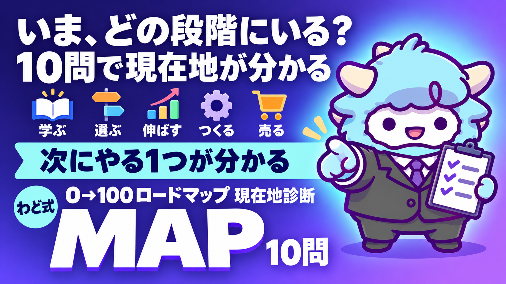

YouTube 0→100ロードマップ 現在地診断
10問に答えると、いまの段階と次にやる1つが分かる
このページが特典の本体です。下へスクロールして使ってください目次
YouTube 0→100ロードマップ 現在地診断
10問に「はい・いいえ」で答えると、0→100ロードマップのどの段階にいるかと、次にやる1つが分かります。3分ほどで終わります。
0→100ロードマップ（5つの段階）
| 段階 | やること |
|---|---|
| 段階1 学ぶ | 収益につながるAIスキルを学ぶ |
| 段階2 選ぶ | 自分に合うスキルを選ぶ |
| 段階3 伸ばす | AIでYouTubeを伸ばし、広告収益・アフィリエイトへ |
| 段階4 つくる | 実績をもとに商品をつくる |
| 段階5 売る | 商品（スキル）を売る |
まだ何も始めていない人は、段階1から始めます。上の段階ほど偉いわけではありません。いまの場所が分かれば、次にやることが1つに絞れます。
10問に答える
上から順に答えてください。迷ったら「いいえ」にします。
結果の読み方（画面で答えられないとき・印刷するとき）
上から順に見て、最初に「いいえ」になった質問の段階が、あなたの現在地です。その質問の右側が「次の1つ」です。全部「はい」なら段階5です。
| 質問 | 段階 | 「いいえ」なら、次の1つ |
|---|---|---|
| Q1. AIで台本・サムネ・編集のどれか1つを作った | 段階1 学ぶ | AIで台本を1本だけ作ってみる。サムネや編集までそろえなくていい |
| Q2. AIでYouTubeを回している人のやり方をなぞった | 段階1 学ぶ | その人の動画を1本選び、手順を1つだけ真似してみる |
| Q3. 「誰の、どの悩みか」を1文で言える | 段階2 選ぶ | 企画リサーチAI社員に届けたい相手を1行で渡し、企画10本から自分が答えられる1本を選ぶ |
| Q4. 自分でやる所とAIに任せる所を決めている | 段階2 選ぶ | 続けられない工程を1つ決めて、そこをAIに任せる |
| Q5. 動画を公開していて、次の1本も作っている | 段階3 伸ばす | 選んだ1本を、まず公開する。完璧にしてから出そうとしない |
| Q6. 反応を見て、1本の1か所を直した | 段階3 伸ばす | 直近の動画1本の、タイトルかサムネを書き直す |
| Q7. 人に見せられる実績がある | 段階4 つくる | 見た人の反応や自分の結果を、1つメモにまとめる |
| Q8. 自分の商品の中身を決めた | 段階4 つくる | 一番反応があったテーマで、商品の形を1つ決める |
| Q9. 自分の商品を買ってもらった | 段階5 売る | 商品の案内を、概要欄か固定コメントに1行入れる |
| Q10. 次の人に届ける流れを決めている | 段階5 売る | 買ってくれた人に感想を聞き、案内文に1行足す |
この結果の使い方
- 次の1つだけやる: 一度に全部やろうとしない。1つ終わったら、もう一度この診断に答えます
- AI社員と組み合わせる: 段階1〜3の「次の1つ」は、一緒に届いた YouTube企画リサーチAI社員でそのまま始められます
最新AIが出たときも、段階は変わらない
新しいAIが出ると、台本・サムネ・編集の手間は減ります。それでも「誰の、どの悩みに答えるか」を決めるのと、反応を見て1か所ずつ直すのは自分です。段階の順番はそのままで、使うAIだけ入れ替えてください。AIの名前・料金・使える範囲は変わるので、使う前に各社の公式サイトで確かめてください。
段階ごとの金額の目安は書いていません。どれだけ収益になるかは、テーマと続け方で変わります。
※成果には個人差があります。特典の内容は予告なく変わることがあります。
次の一歩: セミナーのオープンチャットに参加する
この特典は、セミナー「AIエージェント × 完全YouTube攻略 0→100ロードマップセミナー」の企画でお届けしています。
セミナーのご案内は、企画のオープンチャットにまとめています。